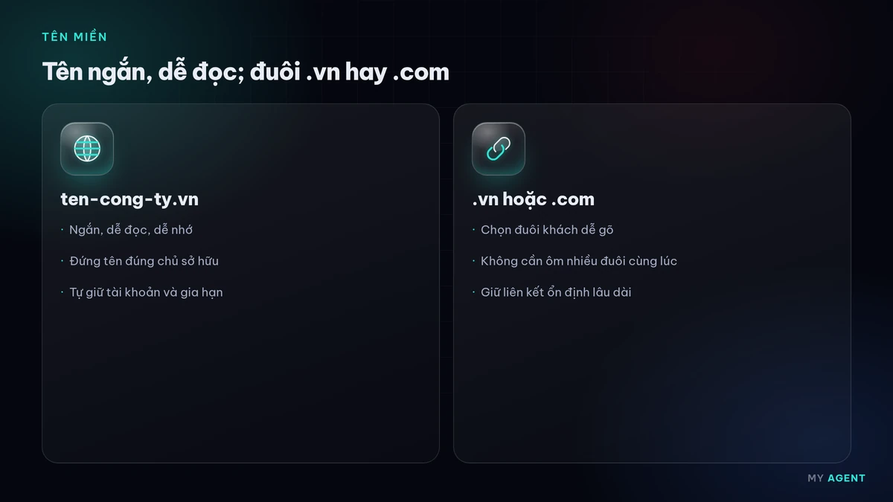
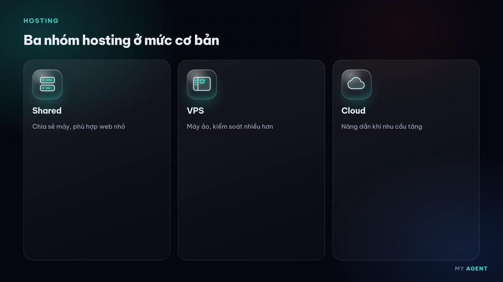
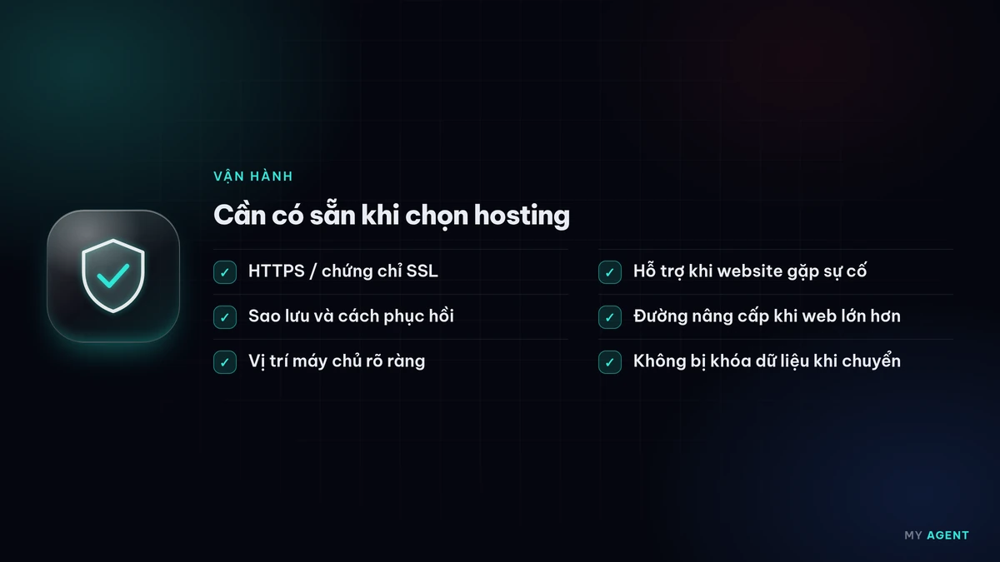

Tên miền là địa chỉ để khách tìm đến website, còn hosting là nơi website "ở". Hai thứ này thường được chọn vội lúc mới làm web, nhưng lại ảnh hưởng lâu dài: đổi tên miền về sau tốn công, còn hosting yếu làm web chậm hoặc gián đoạn. Bài này gom lại 7 điều nên biết, chia ngắn để anh/chị tự kiểm tra trước khi đăng ký.
Điều 1: Tên miền ngắn, dễ đọc, dễ nhớ
Khách thường gõ tên miền sau khi nghe qua điện thoại, thấy trên bảng hiệu hay danh thiếp. Nên:

- Chọn tên ngắn, gần với tên thương hiệu, đọc lên là viết đúng.
- Hạn chế dấu gạch ngang, số và chữ dễ nhầm.
- Thử đọc tên miền cho người khác nghe rồi nhờ họ gõ lại.
Ví dụ một tiệm sửa xe, một văn phòng kế toán hay một shop quần áo đều nên ưu tiên tên mà khách nhớ được sau một lần nghe.
Điều 2: Chọn đuôi .vn hay .com
Không có đuôi nào "tốt hơn" tuyệt đối, chỉ có đuôi hợp hơn với khách của anh/chị:
- .vn / .com.vn: phù hợp khi khách chủ yếu ở Việt Nam, thể hiện rõ doanh nghiệp hoạt động trong nước. Tên miền .vn do VNNIC quản lý và đăng ký qua nhà đăng ký được ủy quyền.
- .com: quen thuộc, hợp khi có khách nước ngoài.
Nếu ngân sách cho phép, có thể giữ cả hai và chuyển hướng về một địa chỉ chính để tránh người khác đăng ký tên gần giống.
Điều 3: Đứng tên đúng chủ sở hữu và tự giữ tài khoản
Đây là điều hay bị bỏ qua nhất. Nên:
- Đăng ký tên miền đứng tên doanh nghiệp hoặc chủ doanh nghiệp, không đứng tên người làm web hộ.
- Tự giữ tài khoản quản lý tên miền (email, mật khẩu, xác thực hai bước).
- Lưu lại hóa đơn, thông tin đăng ký để dễ chứng minh quyền sở hữu khi cần.
Khi đổi đơn vị làm web, anh/chị vẫn chủ động được tên miền của mình.
Điều 4: Theo dõi ngày gia hạn
Tên miền và hosting đều có thời hạn. Quên gia hạn có thể làm website và email ngừng hoạt động, thậm chí mất tên miền. Nên bật gia hạn tự động nếu nhà cung cấp hỗ trợ, đặt nhắc lịch trước ngày hết hạn và dùng email còn hoạt động để nhận thông báo.
Điều 5: Hiểu các loại hosting ở mức cơ bản
Không cần rành kỹ thuật, chỉ cần nắm ý chính:

- Hosting dùng chung (shared hosting): nhiều website dùng chung một máy chủ, dễ dùng, hợp web giới thiệu nhỏ.
- VPS / máy chủ ảo: tài nguyên riêng hơn, linh hoạt hơn nhưng cần người quản trị.
- Cloud hosting: dễ tăng giảm tài nguyên theo nhu cầu.
Chọn theo nhu cầu thật của website, không nhất thiết chọn gói lớn ngay từ đầu.
Điều 6: Vị trí máy chủ, sao lưu, HTTPS và hỗ trợ
Khi so sánh hosting, nên hỏi rõ:

- Máy chủ đặt ở đâu, có gần phần lớn khách truy cập không.
- Có sao lưu định kỳ không, ai giữ bản sao lưu và khôi phục thế nào.
- Có hỗ trợ chứng chỉ SSL để chạy HTTPS không. Google có bài giải thích vì sao HTTPS quan trọng.
- Hỗ trợ kỹ thuật qua kênh nào, trong khung giờ nào.
Điều 7: Tránh bị ràng buộc, chừa đường nâng cấp
Trước khi ký, nên kiểm tra:
- Có thể nâng cấp gói khi website lớn lên không.
- Có chuyển website sang nhà cung cấp khác được không, có tải được dữ liệu và bản sao lưu không.
- Phí gia hạn năm sau so với năm đầu ra sao.
Nếu sau này cần đổi tên miền, Google có hướng dẫn chuyển website khi thay đổi URL để hạn chế ảnh hưởng tới tìm kiếm.
My Agent hỗ trợ thế nào
Chúng tôi tư vấn chọn tên miền và hosting theo nhu cầu thực tế, đăng ký đứng tên doanh nghiệp, cấu hình HTTPS khi thiết kế website và theo dõi gia hạn trong gói chăm sóc website. Chi phí tham khảo có ở bảng giá, giá chưa bao gồm VAT. Chúng tôi phản hồi trong giờ làm việc.
Đọc thêm: Bảo mật website cơ bản cho doanh nghiệp nhỏ, Chi phí làm website phụ thuộc yếu tố nào, Thiết kế web trọn gói gồm những gì.
Câu hỏi thường gặp
Nên chọn tên miền .vn hay .com?
Tùy khách hàng chính. Khách chủ yếu ở Việt Nam thì .vn hoặc .com.vn rất phù hợp; có khách nước ngoài thì .com quen thuộc hơn. Có thể giữ cả hai và chuyển hướng về một địa chỉ chính.
Ai nên đứng tên tên miền?
Doanh nghiệp hoặc chủ doanh nghiệp. Anh/chị nên tự giữ tài khoản quản lý tên miền để chủ động khi đổi đơn vị làm web.
Website nhỏ có cần hosting mạnh không?
Thường không cần gói lớn ngay từ đầu. Quan trọng hơn là hosting ổn định, có sao lưu, hỗ trợ HTTPS và nâng cấp được khi website phát triển.
Từ khóa: tên miền · hosting · doanh nghiệp nhỏ · thiết kế web giá rẻ